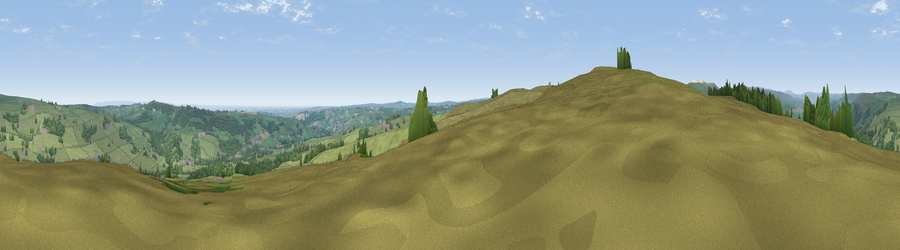

Viewpoint near Glasshouses
#11208 in England · top 13% of its area beats it · near GlasshousesWhere it is
The exact computed spot (SE 17025 63175). Click the marker for map links.
The view, rendered

A 360° render of this exact spot computed from the terrain model, tree cover and land cover — summer colours, afternoon light, calibrated against photographs of famous viewpoints. Real trees, hedges and buildings will differ in detail.
The panorama
Grey silhouette: terrain skyline in each direction (720 bearings, Earth curvature and refraction included). Dashed green: skyline with trees (+15 m) and buildings (+8 m) as obstacles. Blue strip: how far the ground is visible on each bearing.
Where the view opens
Wedge length = distance to the farthest visible ground on that bearing (vegetation-aware). Rings at 10, 25 and 50 km.
What fills the view
66% grassland · 30% woodland · 3% built-up ·
Angular shares of the visible panorama (visual magnitude), not map area. Landscape diversity 0.34 (0–1 Shannon).
Key numbers
More beautiful places nearby
The staircase of upgrades: each row has a higher view potential than everything closer. Driving times are estimates from straight-line distance, calibrated against real road routing — check an actual route before setting out.
| Place | Direction | Drive | Score |
|---|---|---|---|
| High Crag Ridge | WSW · 1 km | ~2 min | 67.6 |
| Viewpoint near Bewerley | W · 4 km | ~10 min | 75.7 |
| Viewpoint near Bewerley | WNW · 4 km | ~10 min | 76.8 |
| Viewpoint near Otley | S · 19 km | ~33 min | 77.5 |
| Viewpoint near East Witton | N · 22 km | ~37 min | 77.8 |
| Viewpoint near Kirby Knowle | NE · 37 km | ~56 min | 80.5 |
| Viewpoint near Thirlby | ENE · 39 km | ~59 min | 81.5 |
| Beacon Hill | NE · 47 km | ~67 min | 84.7 |
54.06424, -1.74137 · source: screening · position refined by local search. Computed location — check access rights before visiting.